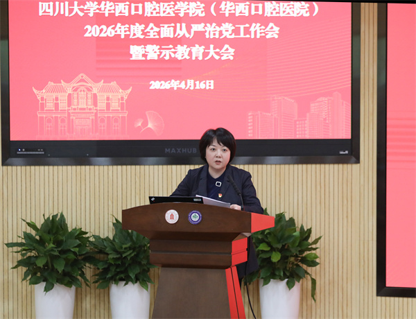

学院通知 · 教学通知
我院召开2026年度全面从严治党工作会暨警示教育大会
发布时间：2026/04/17
4月16日，我院2026年度全面从严治党工作会暨警示教育大会在教学楼学术报告厅召开，全体院领导、党委委员、纪委委员、党支部书记、科室部门负责人、学科系主任、护士长、民主党派和无党派人士代表出席会议。会议由院长韩向龙同志主持。 党委书记谭静同志传达了习近平总书记在二十届中央纪委五次全会上的重要讲话精神，以及学校全面从严治党工作会议精神，全面部署了2026年度全面从严治党主要工作，明确了重点任务。她强调，全院党员干部和师生员工要深刻领悟“三个更加”的重要要求，以良好开局保障“十五五”目标任务顺利推进；全院党员干部尤其是新任干部，要带头把纪律和规矩挺在前面，严于律己、严负其责、严管所辖，以实干促实绩，推动树立和践行正确政绩观学习教育走深走实；要以严的基调正风肃纪，持续健全重点领域制度机制，以更高标准、更实举措推进全面从严治党取得更大成效。 院长韩向龙同志就贯彻落实会议精神提出三点要求。他指出，要拧紧思想“总开关”，以正确政绩观匡正作风纪律，在准确把握管党治党形势和任务中知责；要守好工作“责任田”，把全面从严治党与业务工作同谋划、同部署、同推进，完善一级抓一级、层层抓落实的工作格局，在真抓实干中担责；要练就担当“铁肩膀”，在服务大局中履责，保障“十五五”开好局、起好步，在世界一流口腔医学学科建设中交出优异答卷。 党委副书记、纪委书记沈颉飞同志通报了近年来教育、医疗领域违规违纪违法典型案例，并开展警示教育，强化以案为鉴、以案示警、以案明纪。 标签：
